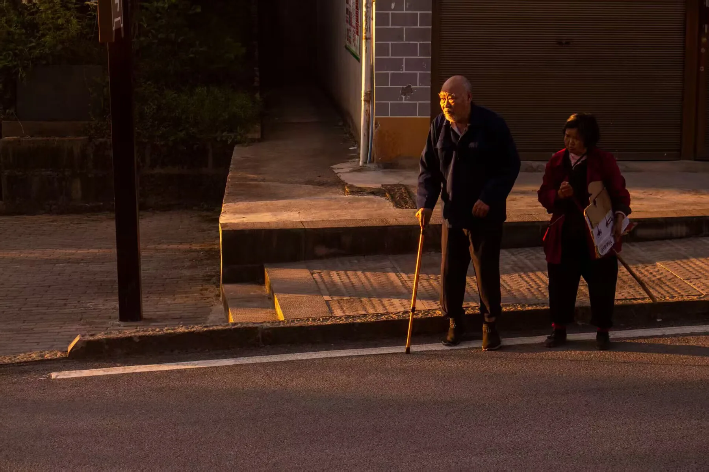

09 / MOMENT
FEATURED STORY
暮色不是结束，
是光最温柔的时候。
我喜欢在一天将要结束的时候按下快门。那时世界慢下来，人物、树影和远山都会被最后的光重新描边。

SELECTED WORK
FEATURED STORY
我喜欢在一天将要结束的时候按下快门。那时世界慢下来，人物、树影和远山都会被最后的光重新描边。
ABOUT THIS JOURNAL
“摄影让我学会观察，网页开发让我学会把观察变成可以被别人感受到的体验。”
我喜欢记录光线、人物和自然中的安静细节。照片对我来说，不只是画面，也是当时情绪和空气的保存方式。
这是我在 Codex 协助下完成的 Web 前端练习。我参与选择作品、调整文案和修改视觉，在过程中真实感受到了网页开发的乐趣。
继续学习 HTML、CSS 和 JavaScript，尝试让每一张照片在网页里找到更合适的位置、节奏和情绪。